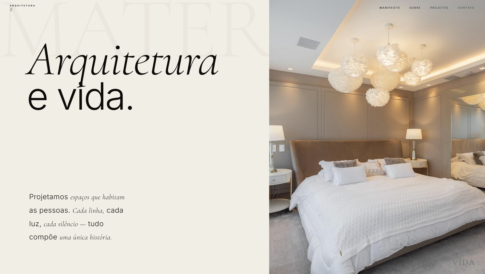
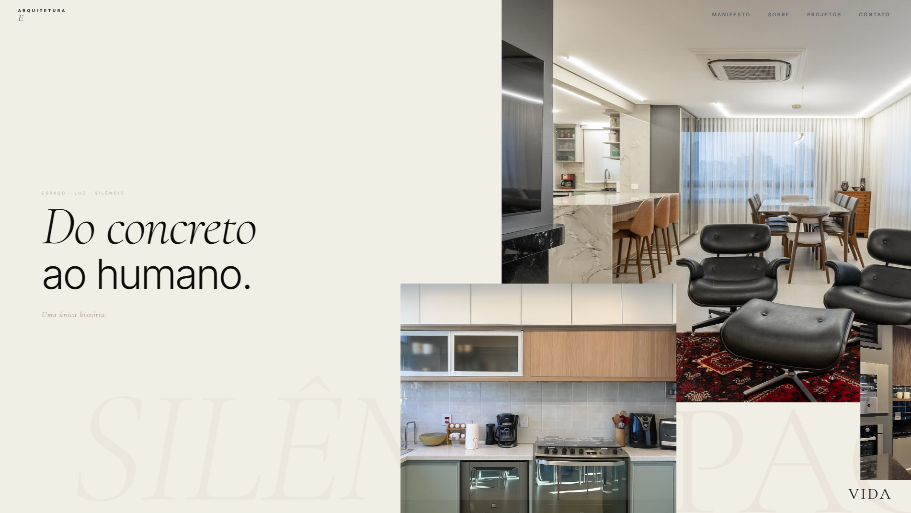
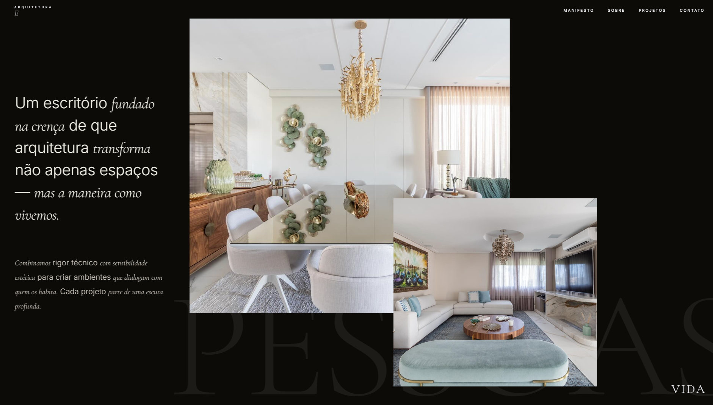
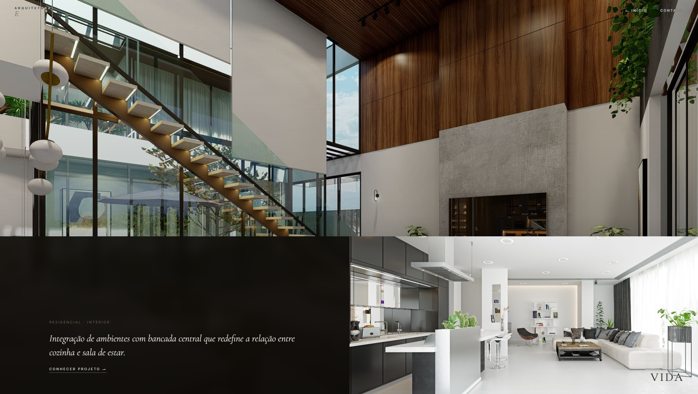
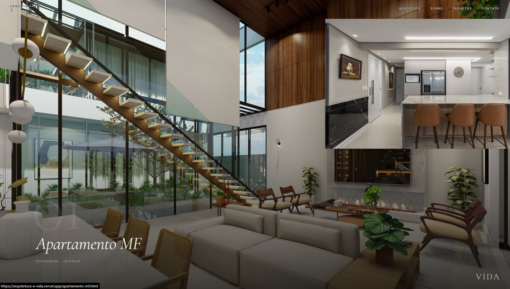
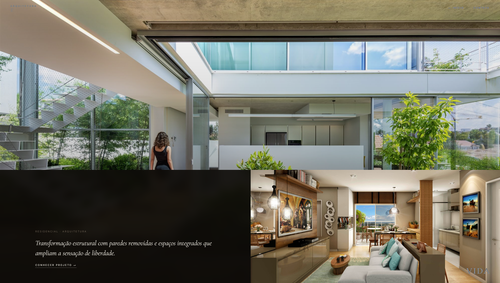
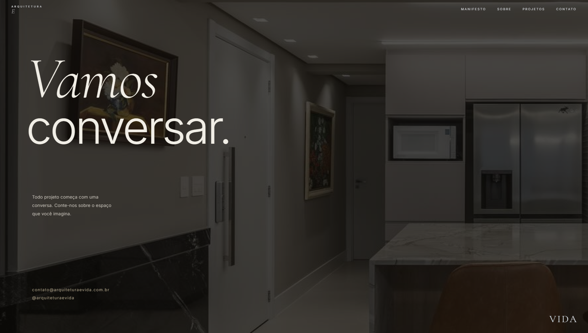

Portfólio editorial imersivo para arquitetura, com navegação horizontal, tipografia expressiva e apresentação visual inspirada em revistas premium e experiências digitais contemporâneas.
Estudo conceitual desenvolvido para fins de aprendizado e demonstração técnica, utilizando referências públicas para apresentar uma possível direção de redesign.
Projeto publicado ↗


"Cada decisão de layout buscou a sensação de folhear uma revista de arquitetura."
Arquitetura e Vida é um redesign conceitual desenvolvido para experimentar uma linguagem editorial aplicada ao universo da arquitetura. O foco principal foi abandonar estruturas convencionais e criar uma experiência baseada em ritmo visual, tipografia, imagens em tela cheia e movimento.
O uso de scroll horizontal, transições suaves e grandes composições fotográficas foi pensado para destacar os projetos apresentados e criar uma identidade própria. Além do aspecto visual, o projeto também aprofundou estudos em animações avançadas e experiências imersivas para desktop.


